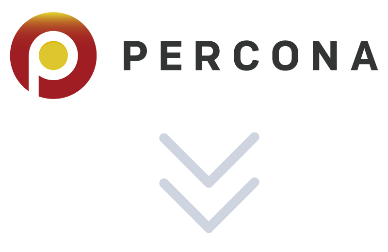
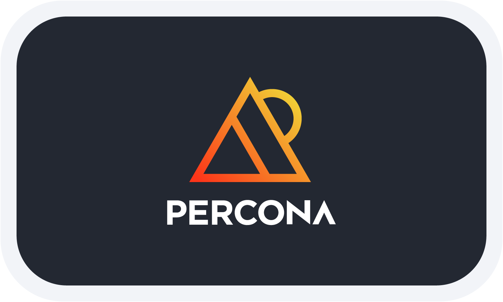
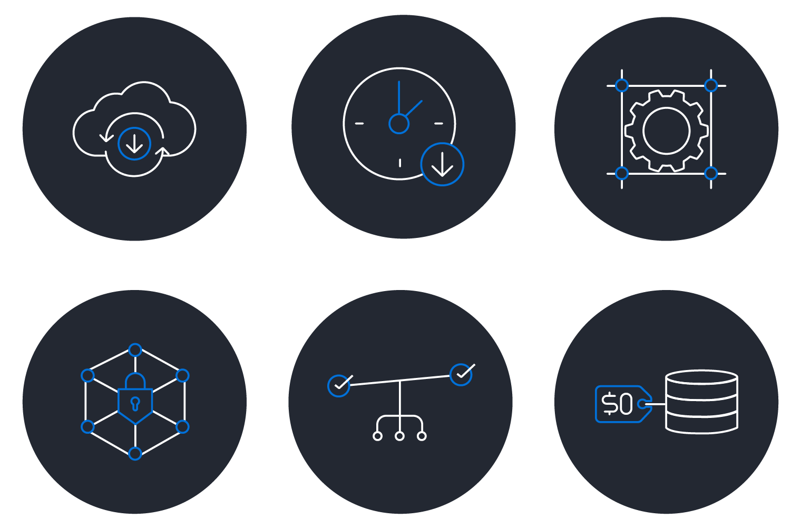
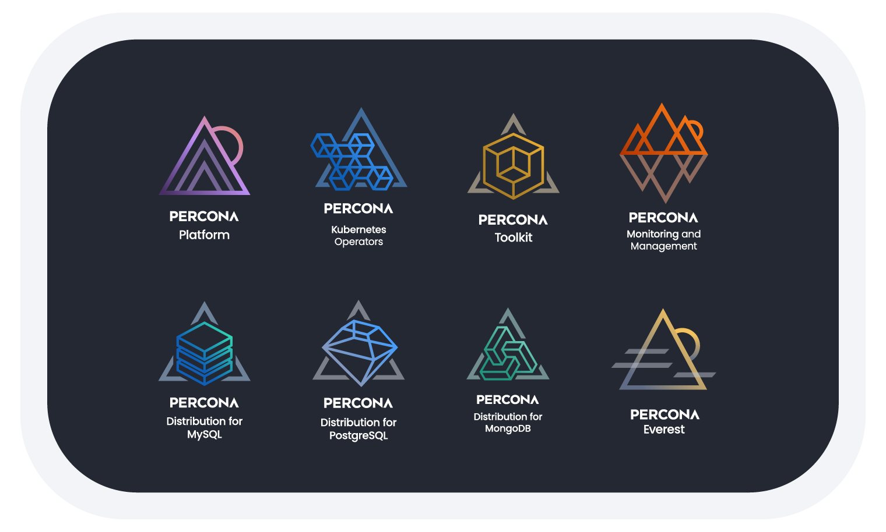
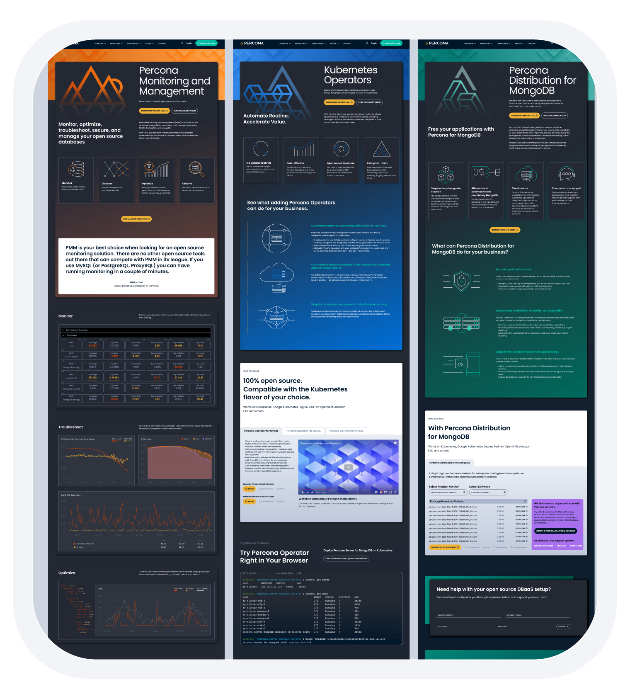
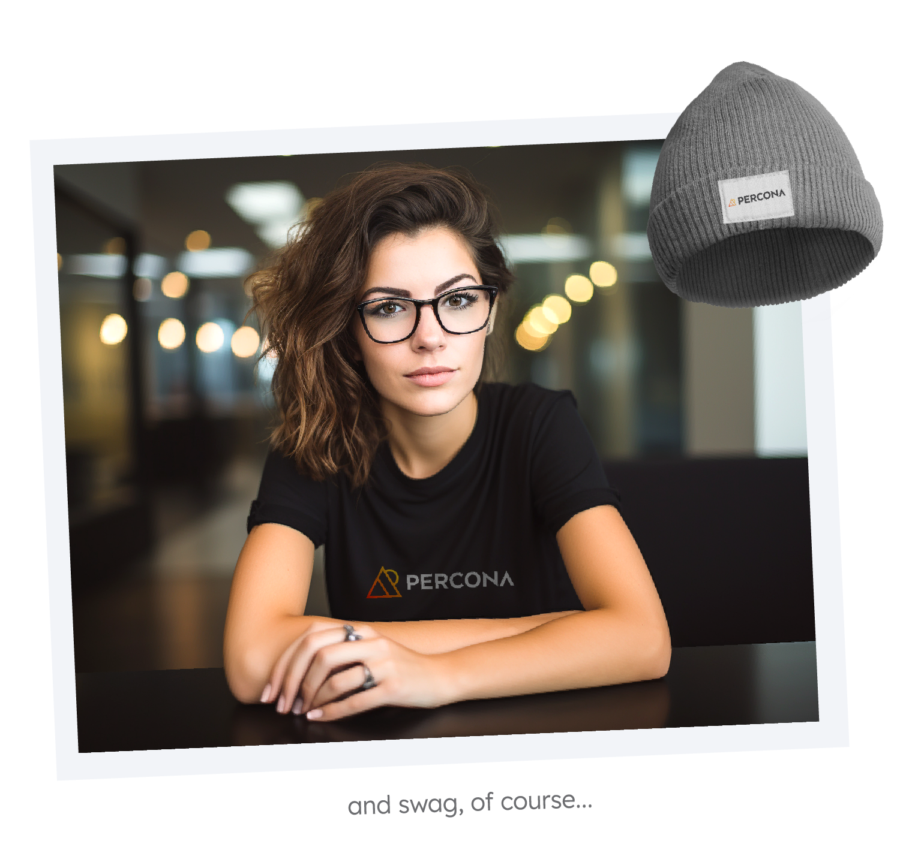
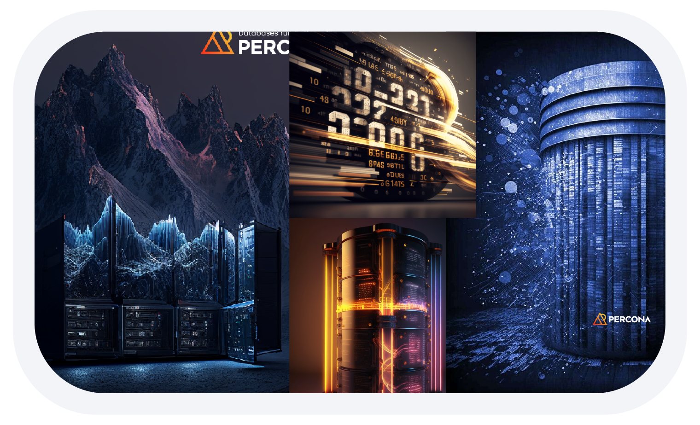
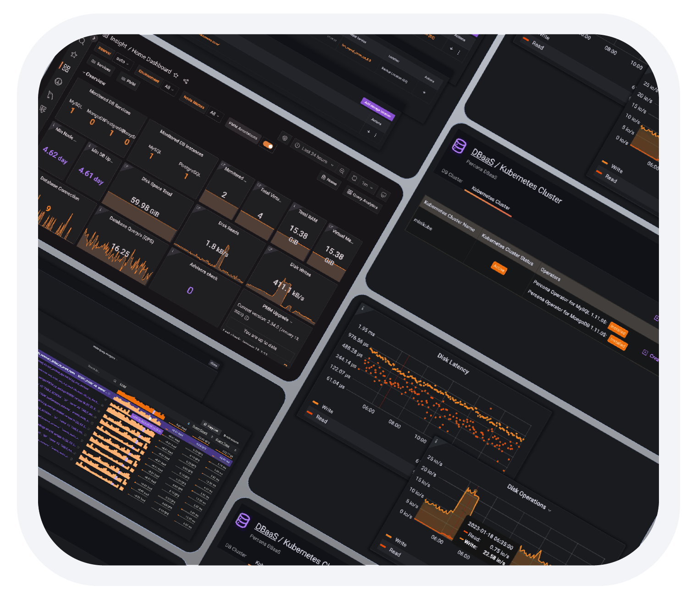
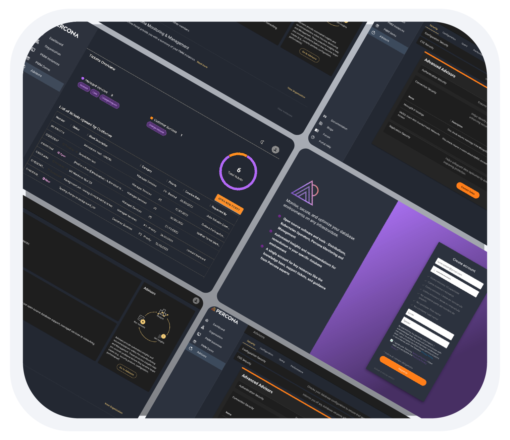

Percona
Rebranding Percona, an open-source database software and services company. Redesign of website, blog and products.
Old logo


Aligning the brand across the company
Percona's brand had grown inconsistent across products, marketing materials, and digital properties. The goal of the rebrand was not only to modernize the visual identity but to create a coherent system that could scale across software products, documentation, and the company's public presence.
I worked closely with stakeholders across marketing, product, and engineering to align on a brand strategy before any visual work began. Because the brand affected multiple teams and products, early alignment was critical to avoid fragmentation during rollout. Research and discovery informed the positioning and tone of the new identity. Only after this foundation was agreed upon did the visual design phase begin.
Building the product identity system
Beyond the main logo, the brand needed to support a growing portfolio of software and services. I designed a set of eight product icons representing the different offerings within the Percona ecosystem, ensuring they worked both individually and as a cohesive family.
To maintain consistency across teams, I created the official brand guidelines covering color palettes, typography, iconography, and usage rules. This provided a shared reference for designers, developers, and marketing teams, helping the new identity scale without fragmenting over time.



Rebuilding the website under pressure
At the same time, the company faced a technical constraint: Drupal 7 was approaching end-of-life, and the website and blog needed to migrate quickly to WordPress while the rebrand was rolling out.
I was chosen to lead a small multidisciplinary team of designers, developers, and content creators. The site contained a large volume of technical documentation, blog content, product pages, and community resources, making information architecture a central challenge of the redesign. Our goal was to migrate platforms while improving navigation and making content easier to discover across documentation, blog posts, and product resources.
The result was a modernized website that aligned with the new brand while improving usability for a diverse audience of developers, database administrators, and enterprise users.
Coordinating the launch
Rolling out the new brand required careful coordination across internal teams and the broader open-source community. A structured communication plan ensured the transition felt intentional rather than disruptive.
Press releases, blog posts, and social media campaigns were prepared to introduce the new brand to employees, customers, and the wider community. This staged rollout helped ensure the launch was cohesive across all channels.


Scaling visual content with AI
A practical challenge emerged during the rebrand: the marketing and content teams needed a large volume of original illustrations for blog posts, case studies, campaigns, and documentation.
To address this, I adopted Midjourney to generate original visuals aligned with the new branding guidelines. These images were then refined and finalized in Photoshop to ensure consistency and quality across deliverables. This workflow allowed the team to produce high-quality visual content at a scale that would have been difficult to achieve through traditional illustration alone.
Rethinking the product experience
The rebrand extended beyond marketing and into the software products themselves. Percona Monitoring and Management (PMM), a widely used database monitoring platform, required improvements to its usability and information architecture.
The redesign process began with interviews, surveys, and usability testing to identify pain points in the existing interface. A key focus was reorganizing the information architecture so that the most critical monitoring and management functions were easier to access. The goal was to reduce cognitive load while helping experienced users move quickly through complex monitoring workflows.


Designing the unified platform
Alongside PMM, the Percona Platform was developed as a central hub connecting the company's software and services. The goal was to provide a unified interface for managing complex database environments across multiple infrastructures.
The platform interface was designed to be responsive and adaptable across different screen sizes, supporting workflows on desktops, laptops, and mobile devices. Throughout the process, prototypes and wireframes were tested with users, and their feedback informed iterative improvements to the design.
Together, the rebrand, website redesign, and product improvements helped align Percona's identity with the maturity of its software platform and growing open-source community.